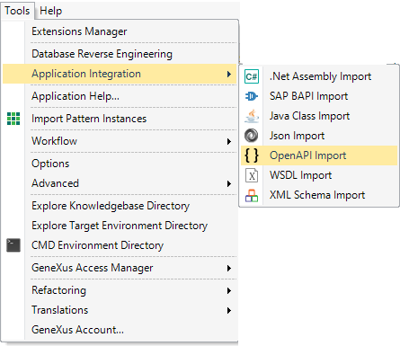

The main purpose of the OpenAPI import tool is to inspect the Open Api RESTful API Documentation (fka Swagger RESTful API Documentation Specification) of any RESTful web service (it can be generated by GeneXus or not).
With the information obtained using the OpenAPI Import tool, implementing a consumer is much plain sailing because it consolidates in the KB some objects (Procedures, SDTs, Domains) which are necessary to consume the RESTful service. After that, it's easy to follow the tutorial HowTo: Inserting data using a BC exposed as Rest service.
The advantage of using the OpenAPI import tool is to avoid the effort of Getting information from the Swagger UI docs, such as the operations, the HTTP verb needed to consume the web service, the input and output parameters (the HTTP body structure for invoking the service and the responses).
Note that the OpenAPI documentation of Rest web services in GeneXus is obtained through the Generate OpenAPI interface property.
The tool is accessible through the Tools > Application Integration > OpenAPI import menu option.

File Path /Url: Enter the URL or file path of the RESTful service documentation in Swagger format.
Swagger Format:
The files describing the RESTful API in accordance with the Swagger specification are represented as JSON objects and conform to the JSON standards. YAML, being a superset of JSON, can be used as well to represent a Swagger specification file.
For Rest web services in GeneXus you can obtain the Swagger file if you activate the Generate OpenAPI interface property.
Module / Folder: Where the automatically generated objects will be located.
Note: It's strongly recommended to choose a module where the automatically created objects from the YAML file will be located in order to maintain KB modularization and avoid undesired objects modifications.
For example, if a structure named "Customers" is included in the YAML file, a "Customers" SDT will be created when this YAML is imported. If an SDT named "Customers" already exists in the KB, it will be modified (replaced by the structure included in the YAML file). If the imported objects are created in a module (e.g. CRM), the SDT will be created as "CRM.Customers" and will not replace the existing one.
The tool consolidates in the KB some objects (procedures, SDTs, domains) which are necessary to consume the RESTful service.
The following is a summary of the objects which are consolidated in the KB:
| Object | Folder / Module | Purpose |
| ApiResponse SDT | OpenAPICommon | Defines the HTTP response structure |
| CallApi procedure | OpenAPICommon | It's a parameterized procedure that given the service URL and the call parameters, executes the HTTP verb and returns the HTTP result. |
| VarCharToJsonFormat, DateTimeToJsonFormat, DateToJsonFormat, NumericToJsonFormat |
OpenAPICommon | Auxiliary procedures |
| ApiBaseUrl | <MyModule>\Client | Returns the BaseURL which will be used for calling the RESTful services. It should be changed in most cases. |
| client procedure of the RESTful service | <MyModule>\Api |
A procedure to invoke the service. The name of this procedure is selected upon the operationId* in the documentation file (Swagger) of the service. *operationId: Unique string used to identify the operation. The id is unique among all operations described in the API. |
| SDTs needed for defining the input and output parameters of the service. | <MyModule>\Model | Input and output parameters of the service. |
In this example, in a KB there is a Rest procedure called "UpdateDocservice".
The following is the KB Explorer structure after importing the YAML file associated with the procedure of the example.
After inspecting the Swagger document of UpdateDocservice using the OpenAPI Import tool in the consumer KB, it automatically generates a procedure called UpdateDocservice under the RestAPI\API path. "RestAPI" is a module in this example, where we have chosen to import the objects generated by the tool.
Below is the part of the Swagger document which corresponds to the service we are inspecting. Note the operationId value that determines the name of the procedure to consume the RESTful service.
/UpdateDocService: post: tags: - UpdateDocService operationId: "UpdateDocService" summary: "Update Doc Service" parameters: - name: "UpdateDocServiceInput" in: "body" required: false schema: $ref: "#/definitions/UpdateDocServiceInput" responses: 200: description: "Successful operation" schema: $ref: "#/definitions/UpdateDocServiceOutput" 404: description: "Not found"
The UpdateDocservice_Input and the UpdateDocservice_Output are SDTs automatically generated by the tool, to be able to consume the service.
The parameter information is also obtained from the Swagger file.
definitions: UpdateDocServiceOutput: properties: Status: type: "string" UpdateDocServiceInput: properties: PropertyId: type: "integer" format: "int32" LanguageCode: type: "string"
The following parm rule is generated in the UpdateDocservice consumer object which is a stub for calling the service.
parm(in:&UpdateDocServiceInput, out:&UpdateDocServiceOutput, out:&message, out:&success);
So, in order to call the service, you just need to call the UpdateDocservice consumer object by passing it the corresponding parameters and then processing the results.
RestAPI.UpdateDocservice(&UpdateDocServiceInput,&UpdateDocServiceOutput,&Message,&success)
if &success
msg("Success!!")
msg("API return " + &UpdateDocServiceOutput.ErrorMessage.Id + " " + &UpdateDocServiceOutput.ErrorMessage.Description)
msg("HTTP Message " + &Message.Id + " " + &Message.Description)
else
msg("There was an error! ")
msg("API return " + &UpdateDocServiceOutput.ErrorMessage.Id + " " + &UpdateDocServiceOutput.ErrorMessage.Description)
msg("HTTP Message " + &Message.Id + " " + &Message.Description)
endif
This is rather easier than defining the input and output parameters manually and executing the HTTP verbs using HTTP client data type. This task is done by the OpenAPI Import tool, which generates the code for you.